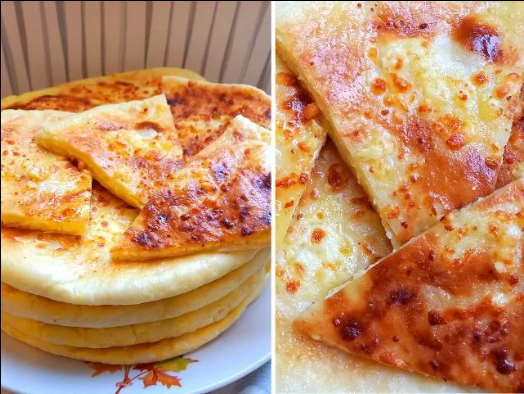

Samegrelo is a historical - geographical side of western Georgia that covers the territories between the rivers Rioni, Tskhenistskali, Enguri and the Black Sea. Its central city is Zugdidi. The Samegrelo region had a great strategic importance throughout its history, because of this, it became the object of numerous invasions by armies of the Romans, Byzantines, Mongols, Turks, Persians, Russians and others. This region is rich in cultural monuments of different eras and impressive nature, blue lakes and very beautiful canyons.
აIn ancient times, Samegrelo was a part of the Kingdom of Colchis. Colchis completely covered the territory of present-day western part of Georgia. Prior to the modern era, the region was also known as Lazika and Egrisi. Its political center was Archeopolis (or Nokalakevi). The myth of the Argonauts and the Golden Fleece is related to Nokalakevi. The Romans conquered this area in the first century BC and ruled it for almost 400 years. In the XI century, the western and eastern Georgia were united into one kingdom, which existed until the XI century. By the end of the XI century, Georgia was divided into three independent states: Kartli, Kakheti and Imereti. Several principalities were created, one of which was Odishi. It covered the whole territory of present-day Samegrelo. From the middle of the XII century through the XIX century, Odishi was ruled by the representatives of the Dadiani family. In 1803, Odishi became a protectorate of Russia. By this time the eastern Georgia was already under the Russian rule. In 1918, Georgia declared independence and Samegrelo became a part of the new democratic country. Today the territory of the principality of historic Samegrelo is part of Samegrelo-Zemo Svaneti administrative region.
Samegrelo is a very interesting place with its historical past and customs. The interest in the mode of life of this region was great in the past. Greek writers considered Colchis the descendants of the biblical son of Noah - Yaphet and Herodotus regarded them as a people of Egyptian descent. Nicolaus of Damascus wrote that the Colchians did not bury the dead in the ground, but they wrapped them up in the leather and hung on the tree. According to Herodotus, the custom of the Colchians was circumcision. Neighboring cultures had a big influence on such customs. Along with religious cultures from outside, worship of trees and others were spread in Colchis, part of which is still preserved in Samegrelo, mostly in the high mountain villages. One of the traditions is the “share of the crow”, in which the eggshell is filled with Ghomi and cheese, then they throw it up on the roof with the words: “share of the crow”, after which the crow will not take away the chickens. In all parts of Georgia the ritual of weeping was very important. In this respect, the well-known tradition is the Megrelian “Zari”- a ritual song for the weeping of the dead. Samegrelo is also rich in Folklor. The most famous Megrelian folk song is “Megrelian Nana”- the lullaby, one of which tunes were used by the Russian composer Peter Tchaikovsky in his famous Christmas ballet - The Nutcracker. You have probably heard a lot about this wonderful and little poem: The sun in my mother, The moon is my father, Thin- tiny stars Sister and my brother. Many travelers note the beauty of Megrelians. Their exquisite garments are also notable. The long chokha was first worn by Megrelians. You can see the Megrelian woman's silk dress, embroidered with gold thread, at the National Museum of Georgia. It is impossible to talk about Samegrelo and not to mention the kitchen. Traditional Megrelian food is spicy and full with seasoning. The reason is because of the mild, subtropical climate of ancient times. Malaria was a major threat to Samegrelo, and residents in the area have found from the outset that consuming large amounts of pepper has somehow prevented the development of a terrible disease. Finally, spicy seasonings have become a traditional attribute of Megrelian cuisine. Megrelian Sulguni, Ajika, Satsivi are well-known, however Elarji takes an advance position, which is made of Ghomi and Sulguni and leaves no one indifferent. We must also mention wine. There are more than 500 sorts of vine cultivated in Georgia, and 60 are cultivated in Samegrelo. The most prominent of these sorts are the Ojaleshi grapes, from which the best wine is produced; It is a semi - sweet red wine, characterized by a faint aroma of wild rose and a bright red color.
Samegrelo is located in the central part of western Georgia, between the river Rioni, Enguri, Tskhenistskali and the Black Sea, on the Kolkheti lowland, on the Caucasus Range, partly on the mountain line. Samegrelo is bordered by Svaneti and the Caucasus Ridge to the north, Racha to the north east, Imereti to the east, Guria to the south, Abkhazia to the north west, and the Black Sea to the west. The administrative center of the region is the city of Zugdidi. In addition to Zugdidi, it comprises 6 administrative units: Abasha, Martvili, Senaki, Chkhorotsku,Tsalenjikha, Khobi and one of the major port cities of Georgia - Poti. In Samegrelo we find lowland and marshy soils as well as hills and valleys. The largest river in the region is Khobistskali, which is 150 km long. The highest mountain is Chitagvala (3226 m). On the northwestern and southern edges of Samegrelo, there are transit rivers - Enguri, Tskhenistskali and Rioni. Samegrelo is located in the humid subtropical climate region along the whole territory of western Georgia. The downhill of the Samegrelo and the hilly strip are distinguished by humid warm climate, with the snowless winters and hot summers. Its medium and high mountain parts, characterized with moderately cold and cold climate, with snowy winters and short summers. The average temperature in the lowlands is + 13-19 °C. In the north, with the rise of mountains height, the air temperature drops.
Georgia is very rich in landscapes, marvelous nature or centuries - old cultural monuments, and in this diversity, Samegrelo truly takes an honorable place. Ancient settlements, unique temples, and fortresses tell wonderful stories or myths, and the limit between legend and reality disappears. This side is a true oasis with beautiful valleys, waterfalls, lowlands or alpine lakes and many fascinating caves. Tobavarchkhili, which is tucked into the rocks creates an unforgettable impression for all visitors. Samegrelo also has an endemic species of Kolkheti National Reserve. It is impossible not to be surprised by the multitone rock called Kuakantsalia, because a simple touch is enough to make this rock shake. As you can see, people of different tastes can find their own little paradise in this area.
Wonder why the travelers who have already visited the country, want to come back to Georgia? One of the primary reasons is to try Georgian food once again. And, there is nobody out there who doesn’t love traditional Georgian food.
megruli xawapuri:
 Passed on from generation to generation over so many years, the preparation customs of the Georgian food is what makes the cuisine particular in the world. Georgian traditional food is prepared differently in various regions of the country. And, we are extremely proud of our cuisine. Samegrelo is a historic province in the western part of Georgia. This region is very famous for its Megrelian cuisine. Megrelian food is hot and spicy. We will tell you a short story of why Megrelians love to use plenty of spices, flavors, and walnuts. This western part of Georgia has a humid subtropical climate. For that reason, infectious disease, Malaria was spread in Western Georgia in the past. Megrelians have found a way to prevent the disease. They have started to create disease-fighting foods in that area. They would use a lot of peppers that partially reduced the risk of Malaria. Megrelian cuisine is enriched with peppers, spices, and walnuts. Let’s see which are the traditional Megrelian foods. translate to Georgia